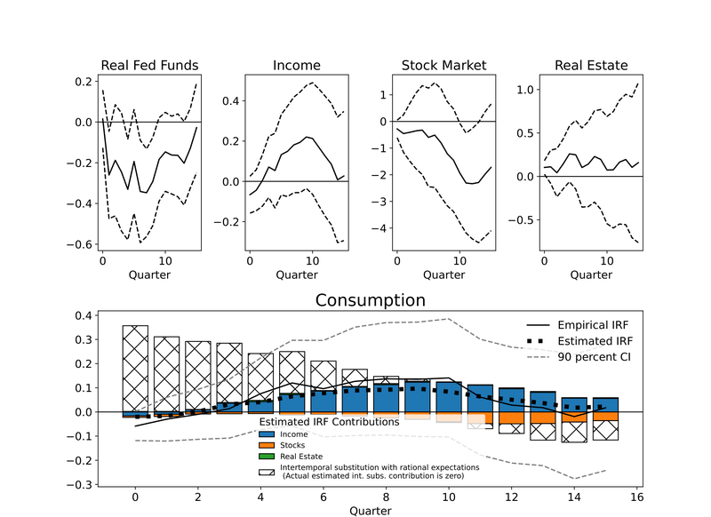
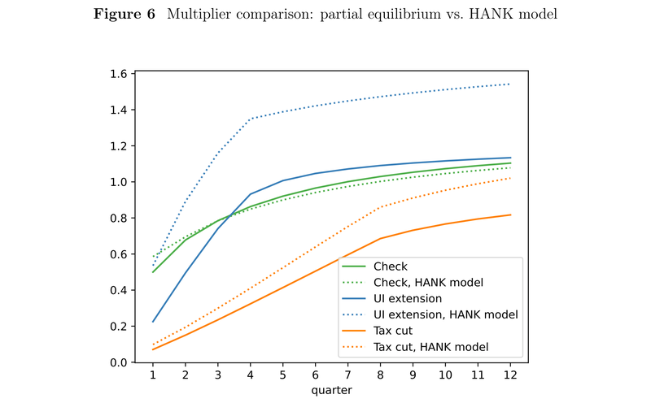
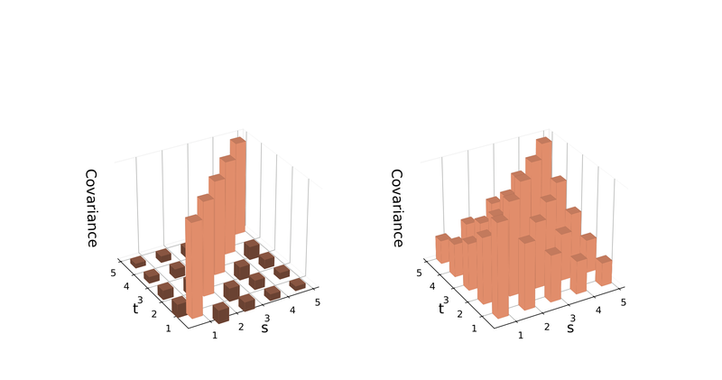

Positions
2019-present
2014-2019
2012-2014
2005-2009
Working Papers
"Do Households Substitute Intertemporally? 10 Structural Shocks That Suggest Not" (Latest pdf, FEDS Working Paper)

Abstract
I combine microdata on the intertemporal marginal propensity to consume with 10 structural macro shocks to identify the role of intertemporal substitution in consumption behavior. Although some of the structural shocks that I examine lead to large and persistent changes in real interest rates—which in many models would induce a large intertemporal substitution effect—I find no evidence that households shift the timing of their consumption in response to these interest rate changes. Indeed, changes to the expected path of income explain almost all the aggregate consumption response, leaving no role for intertemporal substitution.
BibTeX
"Welfare and Spending Effects of Consumption Stimulus Policies" (Latest pdf, FEDS Working Paper)
Conditionally accepted at Quantitative Economics

Abstract
Using a heterogeneous agent model calibrated to match measured spending dynamics over four years following an income shock (Fagereng et al. (2021)), we assess the effectiveness of three fiscal stimulus policies employed during recent recessions. Unemployment insurance (UI) extensions are the clear "bang for the buck" winner when effectiveness is measured in utility terms. Stimulus checks are second best and have two advantages (over UI): they arrive and are spent faster, despite being less targeted, and they are scalable to any desired size. A temporary (two-year) cut in the rate of wage taxation is considerably less effective than the other policies and has negligible effects in the version of our model without a multiplier.
BibTeX
"A Parsimonious Model of Idiosyncratic Income" (Latest pdf, FEDS Working Paper)
Forthcoming at International Economic Review

Abstract
The standard permanent and transitory income model is known to be misspecified. Estimates of income volatility within this model differ depending on the specific data moments used—whether they are in levels or differences—and how these moments are weighted during estimation. We suggest a simple modification to the standard model: Allowing for two transitory shocks that persist for different lengths of time. Our proposed model, which uses the same number of state variables and introduces only one additional parameter, consistently and accurately identifies the parameters of the income process, regardless of the estimation method used.
BibTeX
Published and Forthcoming Papers
"Income Shocks and their Transmission into Consumption" (FEDS Working Paper)
This review will appear in the Encyclopedia of Consumption.
BibTeX
"A Note on the Asymptotic Properties of the Two-Sector Robinson-Solow-Srinivasan Model" (Paper)
Economic Theory Bulletin, March 2025
Abstract
I show that the periodic and chaotic behavior exhibited by the two-sector Robinson-Solow-Srinivasan model in discrete-time is asymptotically irrelevant. If the discrete time interval is smaller than a critical limit, the qualitative properties of the model are the same as those in the continuous-time model.
BibTeX
"Consumption Heterogeneity: Micro Drivers and Macro Implications" (Paper, Code)
American Economic Journal: Macroeconomics, Volume 15, No. 1, January 2023
Abstract
We document heterogeneity in the marginal propensity to consume (MPC) across household characteristics relevant to understanding heterogeneous agent models and monetary policy transmission. We find a strong negative relationship between household liquid wealth and MPC. We show that household liquid wealth predicts MPC closely for every other household characteristic we look at. We use a new empirical method that overcomes sources of bias found in the existing literature, along with administrative data from Denmark that allow us to identify heterogeneous behavior. We use our results to analyze monetary policy transmission mechanisms in both Denmark and the United States.
BibTeX
"Modeling the Consumption Response to the CARES Act" (Paper, Code)
International Journal of Central Banking, Issue 67, March 2021
Abstract
To predict the effects of the 2020 U.S. CARES Act on consumption, we extend a model that matches responses of households to past consumption stimulus packages. The extension allows us to account for two novel features of the coronavirus crisis. First, during the lockdown, many types of spending are undesirable or impossible. Second, some of the jobs that disappear during the lockdown will not reappear when it is lifted. We estimate that, if the lockdown is short-lived, the combination of expanded unemployment insurance benefits and stimulus payments should be sufficient to allow a swift recovery in consumer spending to its pre-crisis levels. If the lockdown lasts longer, an extension of enhanced unemployment benefits will likely be necessary if consumption spending is to recover.
BibTeX
"Sticky Expectations and Consumption Dynamics" (Paper, Code)
American Economic Journal: Macroeconomics, Volume 12, No. 3, July 2020
Abstract
Macroeconomic models often invoke consumption "habits" to explain the substantial persistence of aggregate consumption growth. But a large literature has found no evidence of habits in microeconomic datasets that measure the behavior of individual households. We show that the apparent conflict can be explained by a model in which consumers have accurate knowledge of their personal circumstances but 'sticky expectations' about the macroeconomy. In our model, the persistence of aggregate consumption growth reflects consumers' imperfect attention to aggregate shocks. Our proposed degree of (macro) inattention has negligible utility costs, because aggregate shocks constitute only a tiny proportion of the uncertainty that consumers face.
BibTeX
"In Search of Lost Time Aggregation" (Paper, Code)
Economics Letters, Volume 189, April 2020, Article 108998
Abstract
In 1960, Working noted that time aggregation of a random walk induces serial correlation in the first difference that is not present in the original series. This important contribution has been overlooked in a recent literature analyzing income and consumption in panel data. I examine Blundell, Pistaferri and Preston (2008) as an important example for which time aggregation has quantitatively large effects. Using new techniques to correct for the problem, I find the estimate for the partial insurance to transitory shocks, originally estimated to be 0.05, increases to 0.24. This larger estimate resolves the dissonance between the low partial consumption insurance estimates of Blundell, Pistaferri and Preston (2008) and the high marginal propensities to consume found in the natural experiment literature. A remaining puzzle is the low estimate I recover for the partial insurance to permanent shocks.
BibTeX
Policy Notes
"Failure of Silicon Valley Bank Reduced Local Consumer Spending but Had Limited Effect on Aggregate Spending"
Kansas City Fed Economic Bulletin September 2023
BibTeX
"Substitutability between Balance Sheet Reductions and Policy Rate Hikes: Some Illustrations and a Discussion"
BibTeX
Discussion Papers
Discussion of 'When Inequality Matters for Macro and Macro Matters for Inequality'
NBER Macroeconomics Annual 2017, volume 32